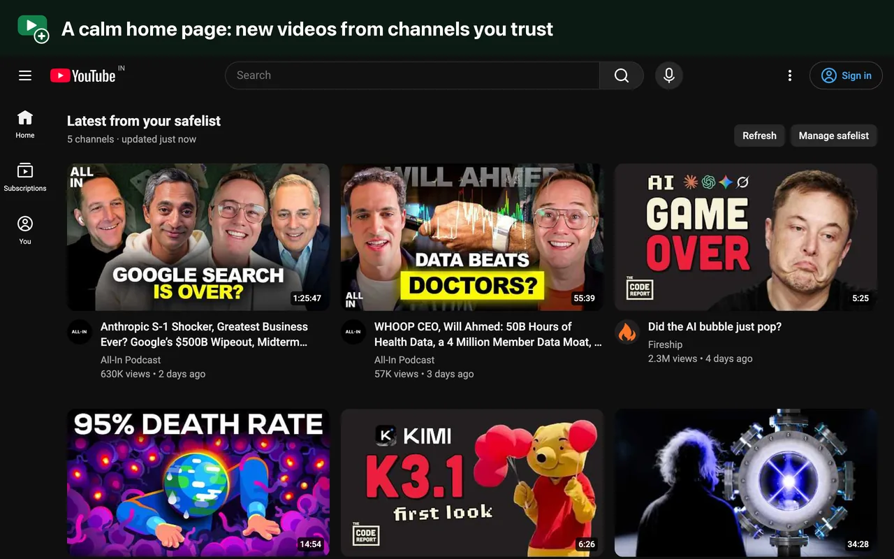
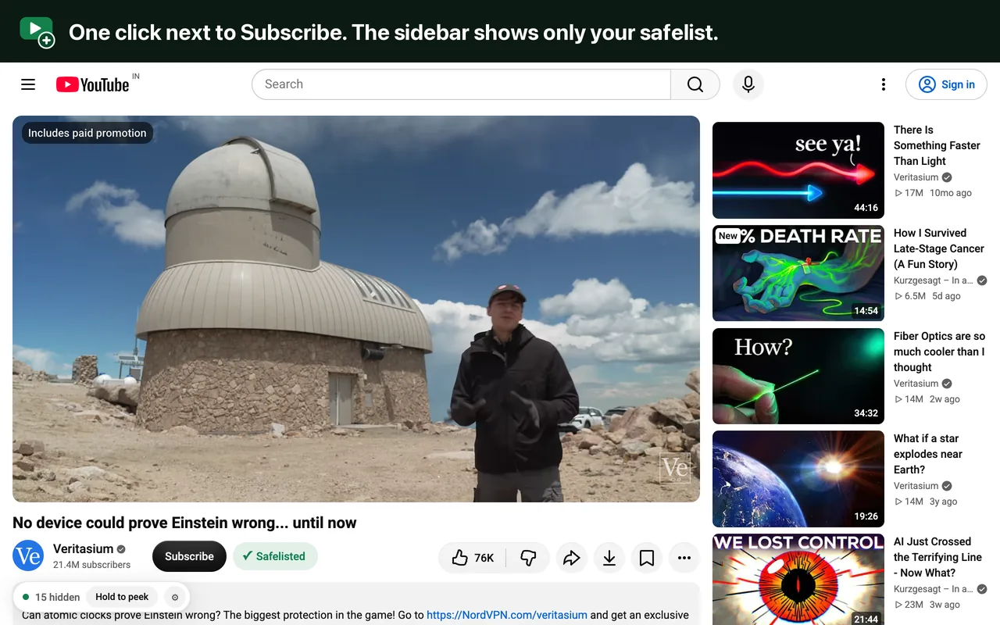
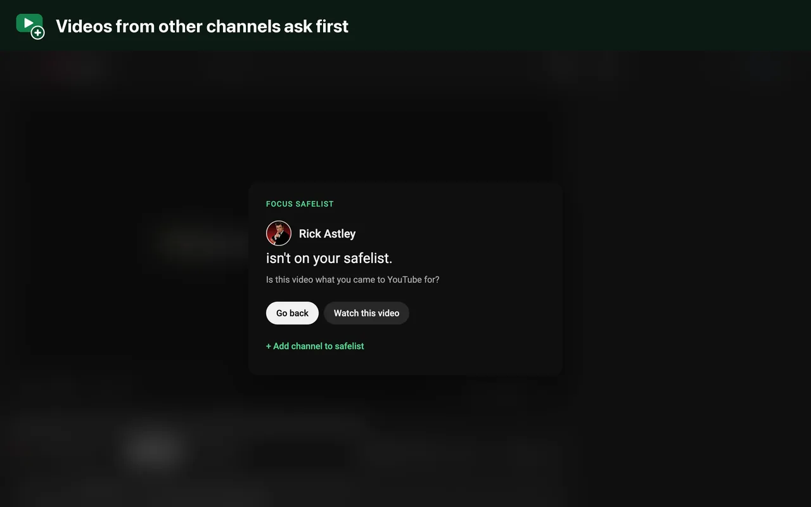
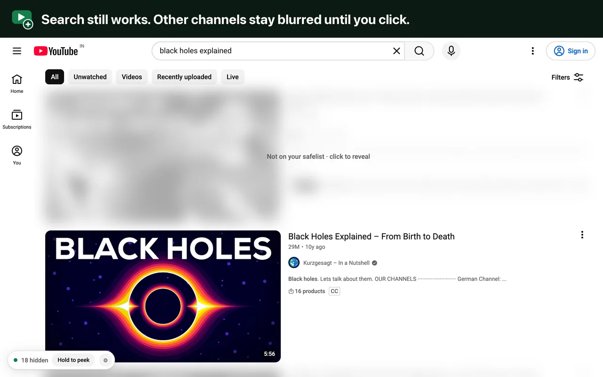
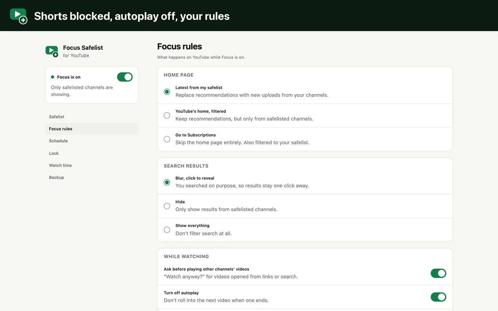

Focus Safelist for YouTube
Free & open-source Chrome extension
- Free
- Open source · MIT
- No account
- No tracking
YouTube, only from channels you trust. Pick the channels worth your time. Everything else YouTube puts in front of you (recommendations, Shorts, autoplay) quietly gets out of the way, while search and the videos you came for keep working.
For Chrome on desktop. Installs in seconds from the Chrome Web Store.

Chrome Web Store GitHub Privacy policy Report an issue
The problem
YouTube is one of the best places to learn almost anything: 87% of its US users say it's important for figuring out how to do things they haven't done before.1 It's also built to keep you watching. In 2018, YouTube's chief product officer said its recommendations drive more than 70% of the time people spend watching.2
Recommendations pull you off course
You open YouTube for one video, and the page around it is designed to offer the next one. In Mozilla's crowdsourced study, 71% of the videos volunteers regretted watching had been recommended by YouTube's algorithm.5 When Pew followed chains of recommendations, they led to progressively longer and more popular videos; by the last step, suggestions averaged more than 40 million views.1 And in a University of Washington study of 120 YouTube users, autoplay and recommendations were what most undermined people's sense of control, while search and playlists supported it.6
YouTube's own buttons barely help
You can tell YouTube "Not interested" or "Don't recommend channel". Mozilla measured how much those buttons actually change what you're shown.
Share of unwanted recommendations each button prevented
Compared with people who didn't use the buttons · more than 20,000 volunteers, 500 million+ videos · Mozilla Foundation, 2022 7
Show as a table
| YouTube button | Unwanted recommendations prevented |
|---|---|
| Don't recommend channel | 43% |
| Remove from watch history | 29% |
| Dislike | 12% |
| Not interested | 11% |
More than a third of people surveyed (39.3%) felt the buttons didn't change their recommendations at all.7 Pushing channels away one at a time is a game you can't win, because there's always another one.
Short videos make focus harder
Shorts are built for a fast, endless swipe. A 2025 meta-analysis of 71 studies and 98,299 people linked heavier short-form video use with poorer attention and self-control.8 The studies are mostly correlational, so they show a link rather than proof that short videos cause it, but it's a link worth taking seriously.
Tools today
There are good extensions for a calmer YouTube, and they mostly take one of three approaches. Each one leaves a gap.
All or nothing
Tools like Unhook and Remove YouTube Suggestions switch off whole areas: the home feed, the sidebar, end screens. A clean slate, but they can't keep suggestions from the channels you value while hiding the rest.
A list that never ends
Tools like BlockTube and Channel Blocker are precise, but more than 500 hours of video are uploaded every minute,9 and blocking a channel doesn't block reuploads or similar channels.10
The lessons go too
Site blockers like StayFocusd, LeechBlock and BlockSite work, but take the tutorials and lectures with them, and strict rules tend to slip: in a Stanford study, people drifted to easier and easier settings over time.11
Flip the default
Name the few channels you trust, and everything else steps aside on its own. Nothing new to block each day, and search and learning stay intact. That's Focus Safelist.
Why a short list beats a long one
Research on other apps points the same way. In a six-week field study, removing the Facebook newsfeed helped people stay on task and avoid distraction.12 And a short pause before opening a distracting app cut how often people opened it by 57% after six weeks.13 Focus Safelist brings both ideas to YouTube: no feed from channels you didn't choose, and a quick question before videos you didn't plan to watch.
| Focus Safelist | Hide everything | Blocklist | Site blocker | |
|---|---|---|---|---|
| Keeps suggestions from channels you value | ✓ Yes | ✕ No | ✓ Yes | ✕ No |
| Hides everyone else by default | ✓ Yes | ✓ Yes | ✕ Only what you've listed | ✓ Yes |
| No new channels to block each day | ✓ Yes | ✓ Yes | ✕ No | ✓ Yes |
| YouTube still usable for learning | ✓ Yes | ✓ Yes | ✓ Yes | ✕ No |
| Website access it needs | YouTube only | Usually YouTube only | Usually YouTube only | Every website |
By approach, not by product: individual tools vary, and some combine approaches.
A safelist isn't a brand-new idea. YouTube Kids has an "approved content only" mode for children, and small open-source projects such as YouTube Angel and FilterTube can filter by channel too. Focus Safelist aims to be the complete, everyday version for adults: a safelist home page, a filtered sidebar, Shorts blocked, search that still works, and a pause before anything off-list.
How it works
Add the channels you trust to your safelist. From then on, YouTube still works the way you know it, but only those channels get to ask for your attention.
A calm home page
The endless recommendation grid is replaced by the latest uploads from your safelisted channels, in YouTube's own layout. Prefer YouTube's home filtered, or straight to Subscriptions? Both are one setting away.
One click next to Subscribe
A + Safelist button sits beside Subscribe on every video and channel page. The sidebar next to the video you're watching suggests only safelisted channels, so one video doesn't turn into ten.

Other channels ask first
Opened a link from a friend or a chat? Videos from channels outside your safelist pause on a short question: is this what you came to YouTube for? Go back, watch just this one, or add the channel.

Search still works
You searched on purpose, so results stay one click away. Videos from other channels are blurred until you click one; safelisted channels show as normal. Prefer them hidden, or not filtered at all? Your call.

Shorts gone, autoplay off, your rules
Shorts are blocked everywhere: shelves, tabs, links and /shorts pages. Autoplay is switched off and end-screen suggestions are hidden. Every rule is a switch in Settings.

- Hold to peek. Hold a button for 2 seconds to see what's hidden, when you really need to.
- Schedule. Filter only during the hours you choose. Shorts can stay blocked all day.
- Optional lock. Add a countdown or a typed sentence before Focus can be switched off.
- Watch time. See time spent on your safelist versus everything else, per day.
- Chrome Sync. Your safelist and settings follow you to your other computers.
- Extras. Hide comments, Explore and Trending, and the notifications bell.
Privacy
There are no accounts, analytics, tracking or servers. Your safelist and settings stay in your browser and are synced only by Chrome itself. The extension asks for three permissions, and can read or change only one website:
www.youtube.comThe only site it runs on. It hides what isn't on your safelist and fetches your safelisted channels' public video lists to build your home page.storageSaves your safelist and settings (synced by Chrome Sync) and your daily watch-time totals (this computer only).declarativeContentGreys out the toolbar button on other sites. Chrome applies this rule itself; the extension never sees which sites you visit.
When you install it, Chrome shows a single warning: "Read and change your data on www.youtube.com".
Why open source matters for extensions
Extensions run inside your browser, and popular ones do change hands or get hijacked. The Great Suspender was sold to an unknown buyer in 2020, then removed by Google as malware in 2021.14 In December 2024, attackers pushed malicious updates to at least 35 extensions with over 2.6 million users.15 In 2025, 18 extensions with 2.3 million users that weren't malicious at first turned malicious through updates.16 Focus Safelist's code is public, so every change can be checked, and it can only ever touch youtube.com.
Every line of code is on GitHub under the MIT License. Read the full privacy policy.
FAQ
Is it really free?
Yes. No paid tier, no ads, no account. The source code is MIT-licensed on GitHub.
Does it block YouTube?
No, and that's the point. Search, your subscriptions and every video from your safelisted channels work as usual. It removes the parts designed to pull you somewhere you didn't plan to go.
How do I see what's hidden?
A small bar at the bottom-left of YouTube shows how many videos are hidden. Hold Hold to peek for 2 seconds (you can change this in Settings) to see them. You can also switch Focus off from the toolbar button.
How many channels can I safelist?
About 400, the limit of Chrome's sync storage. Most people need far fewer: the point is a short list of channels you'd choose on purpose.
Does it work on my phone or the YouTube app?
No. It's a Chrome extension, so it works in Chrome on desktop (Windows, Mac, Linux and ChromeOS).
What about other browsers?
It's built and tested for Chrome. Browsers that install extensions from the Chrome Web Store, such as Edge and Brave, may work but aren't tested.
What happens when YouTube changes its layout?
YouTube changes its pages often. Everything the extension looks for lives in one file so it can be fixed quickly. If something slips through, please open an issue.
Make YouTube yours again
Free and open source. No account, no tracking. Set up in a minute.
References
- Smith, A., Toor, S. & van Kessel, P. Many Turn to YouTube for Children's Content, News, How-To Lessons. Pew Research Center, 7 Nov 2018. Survey of 4,594 US adults.
- Neal Mohan, YouTube Chief Product Officer, speaking at CES, January 2018. Reported in "YouTube Says 70% Of All Watch Time Is Driven By Its Own Recommendations", Tubefilter, 11 Jan 2018, and by CNET.
- YouTube. YouTube press page: "YouTube Shorts is now averaging over 200 billion daily views." Accessed Nov 2026.
- Ofcom. From apps to AI search: how the UK goes online in 2025, 10 Dec 2025. Excludes viewing on TV sets.
- Mozilla Foundation. Mozilla Investigation: YouTube Algorithm Recommends Videos that Violate the Platform's Very Own Policies (YouTube Regrets), 7 Jul 2021. Crowdsourced from volunteers; not a random sample.
- Lukoff, K. et al. How the Design of YouTube Influences User Sense of Agency. CHI 2021. Survey of 120 US users of the YouTube mobile app.
- Nguyen et al. Feeds, feelings, and focus: A systematic review and meta-analysis examining the cognitive and mental health correlates of short-form video use. Psychological Bulletin, Sep 2025. 71 studies, 98,299 participants. Mostly cross-sectional studies; associations, not causes.
- Tubefilter. More Than 500 Hours Of Content Are Now Being Uploaded To YouTube Every Minute, 7 May 2019 (figure given by YouTube).
- YouTube Help. Block channels: "It doesn't block videos that are reuploaded on other channels, or similar channels with related content."
- Kovacs, G., Wu, Z. & Bernstein, M. S. Not Now, Ask Later: Users Weaken Their Behavior Change Regimen Over Time, But Expect To Re-Strengthen It Imminently. Stanford University, 2021.
- Lyngs, U. et al. "I Just Want to Hack Myself to Not Get Distracted": Evaluating Design Interventions for Self-Control on Facebook. CHI 2020.
- Grüning, D. J., Riedel, F. & Lorenz-Spreen, P. Directing smartphone use through the self-nudge app one sec. PNAS, Feb 2023. Field data from people who chose to install the app.
- BleepingComputer. The Great Suspender Chrome extension's fall from grace, 6 Feb 2021.
- The Hacker News. Dozens of Chrome Extensions Hacked, Exposing Millions of Users to Data Theft, Dec 2024.
- The Register. Massive browser hijacking campaign infects 2.3M Chrome, Edge users, 8 Jul 2025.